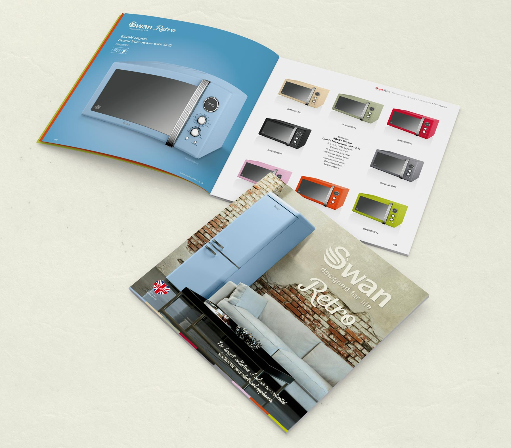

BRIEF
Embracing the brand’s rich history, the Swan Retro Collection features a host of iconic product designs re-born and revamped with modern technology. We needed to create a product, packaging and imagery solution that suited the vintage styling of the products, yet also sat comfortably alongside the existing Swan offerings.
CLIENT
Project includes: Design, CGI, Product Development, Video
NEW PRODUCT DEVELOPMENT
The range is ever growing and by using CGI for every aspect of imagery from the very start, we can continue to design new products and colourways that will compliment the current lines.

PACKAGING & BROCHURE
Offering impact through an understated design, the strength of both the packaging and brochure for this range is down to the simplicity and bold use of colour.

RESULTS
By utilising the best of our product development skills, coupled with our marketing strategy knowledge, Swan has had unprecedented success with the introduction of its Retro Collection. With turnover more than doubling in the past year, the Swan brand is now considered as a genuine rival to the ‘A-brands’.